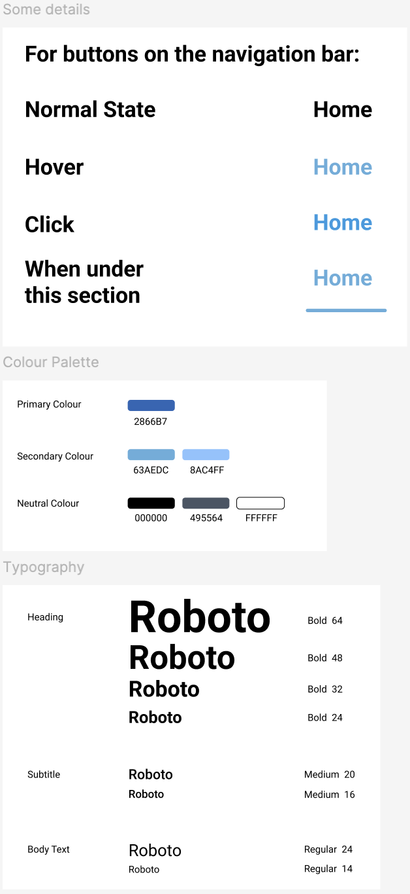
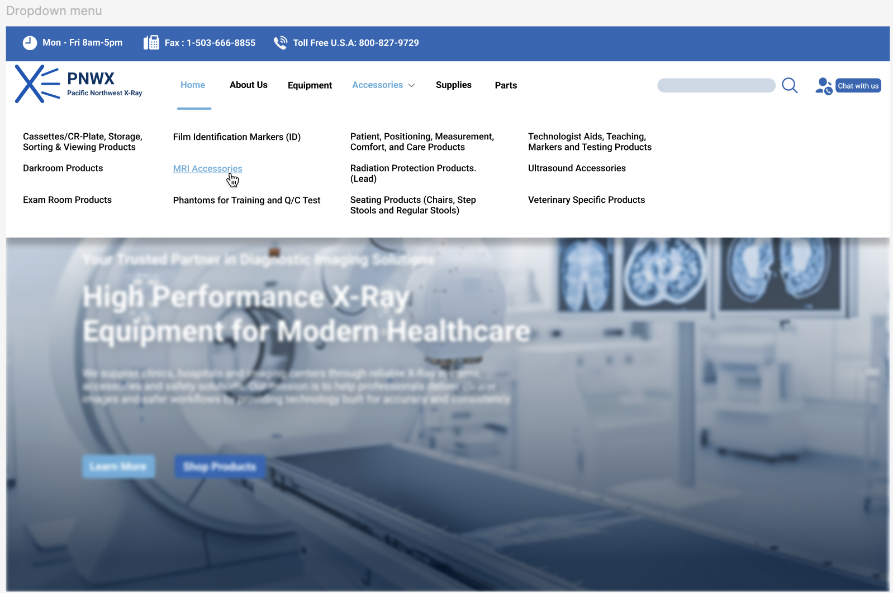
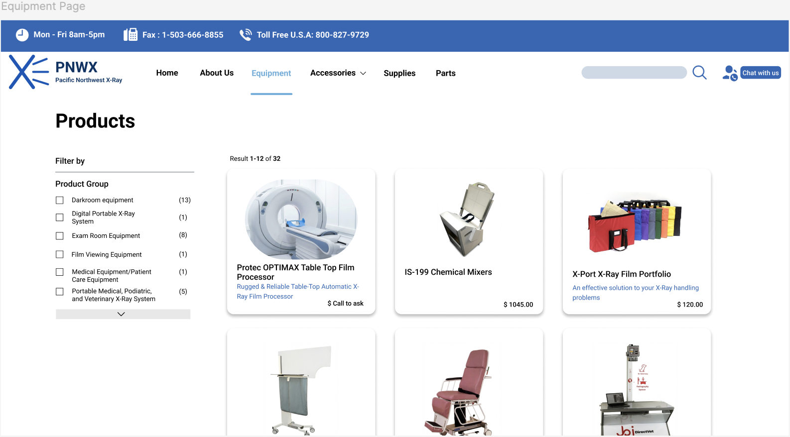
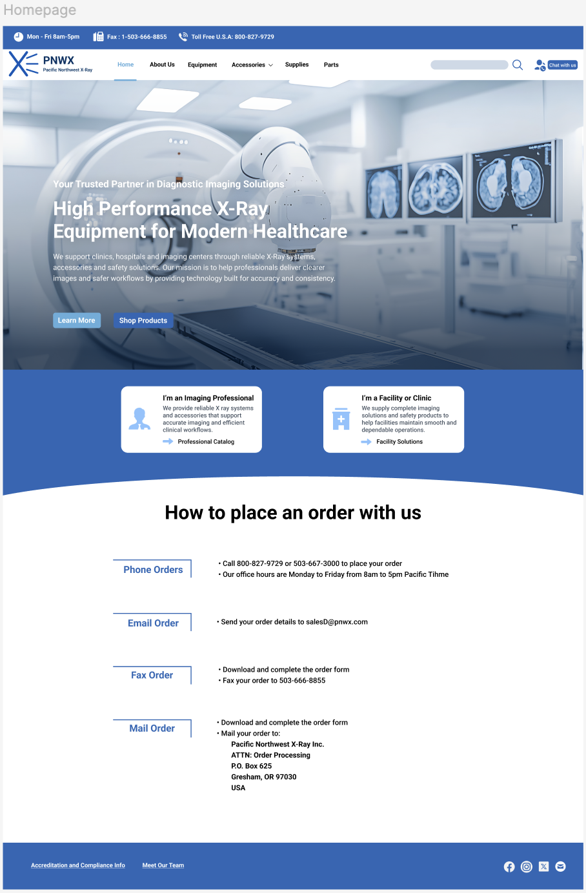

Designing a Scalable Website & Visual System for Medical Imaging
Redesigning the Pacific Northwest X Ray website to improve usability, clarity, and credibility for professional buyers navigating complex product flows.
Overview
This project redesigns the Pacific Northwest X Ray website, a B2B supplier of medical imaging equipment. The existing website contained dense product information and non standard ordering processes, making it difficult for professional buyers to quickly locate relevant products and understand how to place orders. The redesign focused on improving information clarity, navigation structure, and visual consistency to support efficient product discovery and decision making.
Project Context
The website serves medical imaging professionals who purchase specialized equipment such as X ray systems, imaging accessories, and technical components. These users often need to quickly locate specific products, review technical specifications, and determine the appropriate ordering method.
However, the original website presented several challenges including unclear navigation structure, inconsistent visual hierarchy, and fragmented ordering information. These issues increased cognitive load and made product discovery slower for professional users.
Before & After
1. Navigation Clarity
Before
The original homepage relied heavily on long lists of text links to represent product options. Categories were not clearly grouped, and navigation elements were visually scattered across the page. As a result, users had to read through multiple links to understand where different products were located.
For a product-heavy B2B catalog, this structure increases cognitive load and makes it difficult for professional users to quickly locate relevant equipment.
After
The redesigned navigation introduces a structured menu system with clearly grouped product categories such as equipment, accessories, supplies, and parts. A consistent navigation bar and dropdown structure help users quickly scan available sections and understand how products are organized within the site.
This improves orientation and allows users to move between product categories more efficiently when searching for specific equipment.
Research & Benchmarking
We began by reviewing the existing website and benchmarking similar medical equipment and B2B supplier platforms. This helped us identify usability patterns that support trust, clarity, and efficient product discovery, while also revealing pain points such as inconsistent navigation feedback, weak hierarchy, and limited visual consistency.

UX Direction
Based on our findings, we defined a clear UX direction focused on simplicity and reliability. Key priorities included strengthening information hierarchy, improving navigation feedback, and creating a structured layout that supports scanning and comparison across dense content.
Visual System Design
We developed a reusable visual system to ensure consistency across the site. A blue-based colour palette was used to convey trust and clinical reliability, supported by neutral tones for readability. Roboto was selected as the primary typeface to establish a clear typographic hierarchy across headings, body text, and product details.

Page-Level Application
The visual system was applied to key pages including the homepage, dropdown navigation, product listing pages, and ordering information sections. Design decisions focused on improving clarity, reducing cognitive load, and guiding users through complex information with predictable interaction patterns.

We created a scalable layout system to help medical imaging professionals review dense product information with clarity and speed.

Other Projects
Personalized Nutrition
Designing a tailored tracking experience through data visualization.

Health Monitoring
Designing a data-driven health monitoring experience.